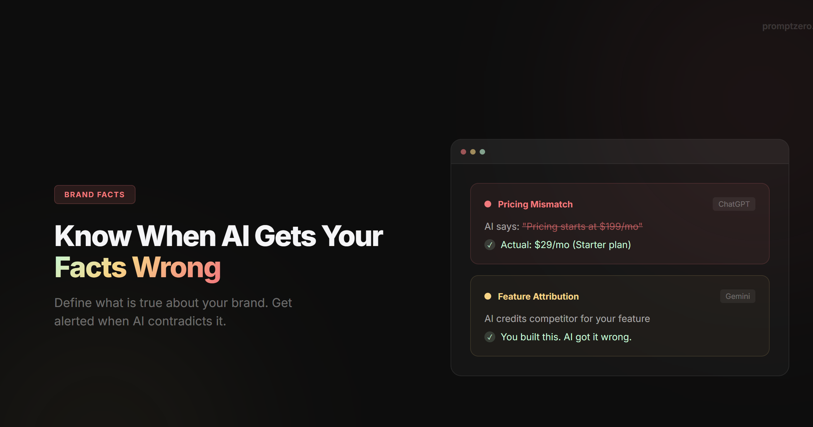

PromptZero, designing how AI visibility is seen.

The brief: turning multi-model AI data into a clear visual story
PromptZero tracks how brands appear inside answers from ChatGPT, Gemini, Grok, and Perplexity. The design challenge was two-fold: craft a distinct brand identity that stands out in a sea of generic AI tools, and design a complex analytics dashboard where founders and marketers can read visibility scores, sentiment, and citations in seconds.


Brand identity and dark-mode design system
I designed the complete visual identity from the ground up: logomark, color tokens, typography scale, and component library. Instead of neon AI purple clichés, the interface uses a high-contrast editorial dark palette with semantic status colors so dense multi-model tables, score rings, and citation graphs remain effortless to scan.


Marketing site to in-app product experience
Every touchpoint shares one cohesive design language, from the conversion-focused landing page and interactive visibility calculator to the 10-module SaaS dashboard. I designed all screen states in Figma and translated the token system directly into responsive Tailwind CSS components.